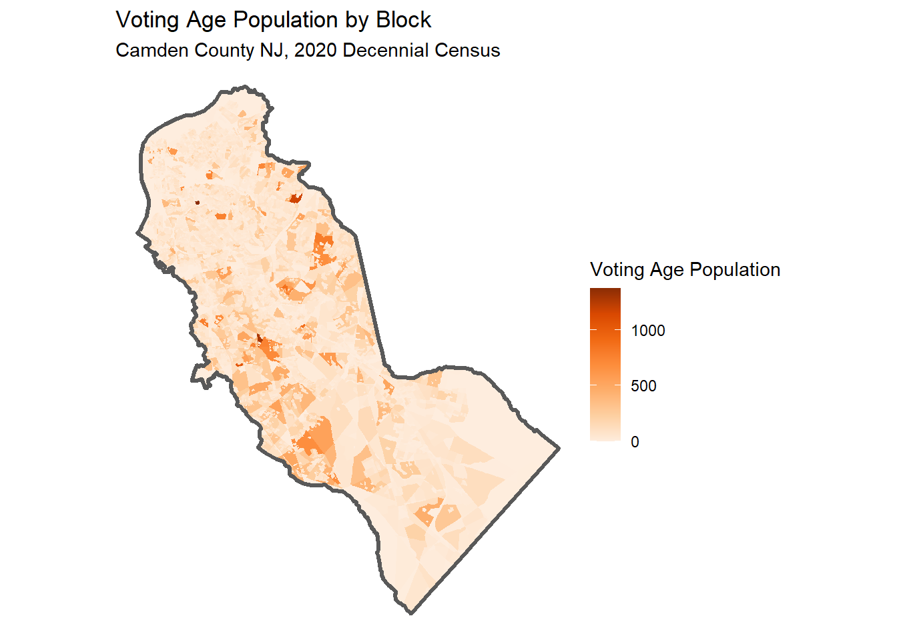
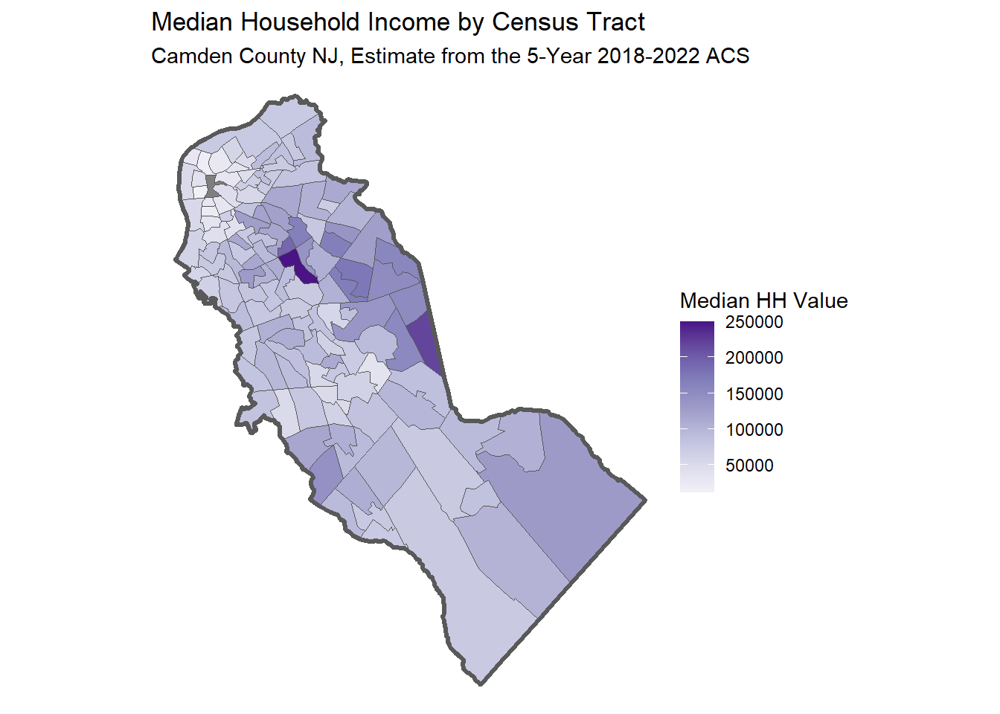

Exercise 3. Importing Data from the Decennial and ACS Census
Population Profiling with R, August 2024
1 Summary
In this notebook, we will:
- import data from the Decennial and American Community Survey censuses using
tidyCensus
- learn how to identify which variables to ask for
- make a map of total voting age population by Census Tract
2 Setup
2.1 Load the packages we need:
2.2 Load our census API key
To get your own Census API Key, sign-up here: http://api.census.gov/data/key_signup.html
To protect your key from accidental escape, it’s better to put it in .Renviron (usethis::edit_r_environ()) and bring it into your script with Sys.getenv("WHAT-YOU-NAMED-IT").
## Use one of the following to enter your Census API Key
## Bring it in as an environment variable
my_census_api_key <- Sys.getenv("CENSUS_API_KEY")
## Bring it in as an external text file
## my_census_api_key <- readLines(here::here("./exercises/my-census-api-key.txt"), 1)
## Hardcode it
## my_census_api_key <- "1234567890abcdefg"
tidycensus::census_api_key(my_census_api_key)To install your API key for use in future sessions, run this function with `install = TRUE`.2.3 Define the common directory for local copies:
my_data_dir <- tools::R_user_dir("datafordemocracy", which = "data")
if (!dir.exists(my_data_dir)) dir.create(my_data_dir, recursive = TRUE)
tools::file_path_as_absolute(my_data_dir)[1] "C:/Users/Andy/AppData/Roaming/R/data/R/datafordemocracy"2.4 Import the county boundary for plotting:
3 Import Decennial Census Variables
The decennial census provides a complete count of the population, and many of the variables are available down to the small spatial unit (block). That being said, the number of variables are quite limited, focused on age and race.
You can get Decennial census variables with tidycensus::get_decennial(). Example:
## Get the total population and population of voting age per block
camden_pop20_blk_sf <- tidycensus::get_decennial(
geography = "block",
variables = c(total_pop = "P1_001N", voting_age_pop = "P4_001N"),
year = 2020,
sumfile = "pl",
state = "NJ",
county = "Camden",
output = "wide",
geometry = TRUE,
progress_bar = FALSE
)Getting data from the 2020 decennial CensusDownloading feature geometry from the Census website. To cache shapefiles for use in future sessions, set `options(tigris_use_cache = TRUE)`.Using the PL 94-171 Redistricting Data Summary FileNote: 2020 decennial Census data use differential privacy, a technique that
introduces errors into data to preserve respondent confidentiality.
ℹ Small counts should be interpreted with caution.
ℹ See https://www.census.gov/library/fact-sheets/2021/protecting-the-confidentiality-of-the-2020-census-redistricting-data.html for additional guidance.
This message is displayed once per session.tidycensus::get_decennial()
-
year- if you don’t specify the year, it will default to the most recent -
state = "NJ"andcounty = "Camden"- these aren’t just for convenience, you must reduce your geography to get back data at the block level -
geography = "block"- block groups are the small spatial unit, and not every variable is available at this scale. In general, estimates for the larger areas are more trustworthy. -
variables = c(total_pop = "P1_001N", voting_age_pop = "P4_001N")- by passing a named vector for the variables argument, the human-friendly labels will be used instead of the cryptic census variables -
geometry = TRUE- return a sf object -
output = "wide"- put each variable in its own column (this is what you want if you are asking for a sf object back)
View what we imported:
3.1 Map the results
ggplot(camden_pop20_blk_sf, aes(fill = voting_age_pop)) +
geom_sf(col = NA) +
geom_sf(data = camden_bnd_sf, fill = NA, lwd = 1.2) +
scale_fill_distiller(palette = "Oranges", direction = 1) +
labs(title = "Voting Age Population by Block",
subtitle = "Camden County NJ, 2020 Decennial Census",
fill = "Voting Age Population") +
theme_void()
3.2 Finding the right variable name
Census datasets have 100s (if not 1000s) of variable names. Finding the right one is not trivial. In addition to finding the right variable, not all variables are available for all years and geographies. To make matters even worse, they often change with each new census.
Approach 1.
tidyCensus has a tidycensus::load_variables() function that downloads the variable tables and returns them as a data frame. You can open this data frame in a RStudio View pane and use the sort and filter buttons to find the variable you’re interested in.
# Detailed Tables:
load_variables(2020, "acs5")
# Data Profile:
load_variables(2020, "acs5/profile")
# Subject Tables:
load_variables(2020, "acs5/subject")Approach 2
ChatGPT does a pretty good job at finding variables, provided you ask her a clear question. Remember to cross-check the answer!
Qtn. Which variable from the US Census 2018-2022 ACS measures median household income at the tract level?
ChatGPT:
The census variable from the 5-year American Community Survey (ACS) that measures median household income at the tract level is B19013_001E.
This variable represents the estimated median household income in the past 12 months (in inflation-adjusted dollars) for a given geographic area, such as a census tract.
4 Getting data from the ACS
The American Community Survey Data from the US Census has many more interesting variables. Unfortunately, these variables are based on an sample so they are not as precise as the decennial census variables. ACS data should be thought of as estimates, and the margin-of-error is return.
Another limitation of ACS data is that most of the variables are not available at the small spatial areas (due to the sampling methodology), and may only be available for the 5-year summaries (although 1 and 3-year summaries are available also for some variables and some geographies).
Import median household income by census tract:
camden_medhhinc22_trct_sf <- get_acs(
geography = "tract",
variables = c(median_hh_income = "B19013_001E"),
state = "NJ",
county = "Camden",
geometry = TRUE,
output = "wide",
progress_bar = FALSE
)Getting data from the 2018-2022 5-year ACSDownloading feature geometry from the Census website. To cache shapefiles for use in future sessions, set `options(tigris_use_cache = TRUE)`.Inspect results:
camden_medhhinc22_trct_sf |> head()4.1 Map results
Map the Results:
ggplot(camden_medhhinc22_trct_sf, aes(fill = median_hh_income)) +
geom_sf() +
geom_sf(data = camden_bnd_sf, fill = NA, lwd = 1.2) +
scale_fill_distiller(palette = "Purples", direction = 1) +
labs(title = "Median Household Income by Census Tract",
subtitle = "Camden County NJ, Estimate from the 5-Year 2018-2022 ACS",
fill = "Median HH Value") +
theme_void()
Save to disk:
4.2 CHALLENGE
Think of a variable of interest to your work that might have been collected on the American Community Survey (e.g., home ownership).
Ask ChatGPT what ACS variable measures it. Be sure to specify which ACS census product (e.g., the 2018-2022 5-year Summary), and cross-check the result with Google.
Import that variable at the census tract level for a county of your choice, and plot it.